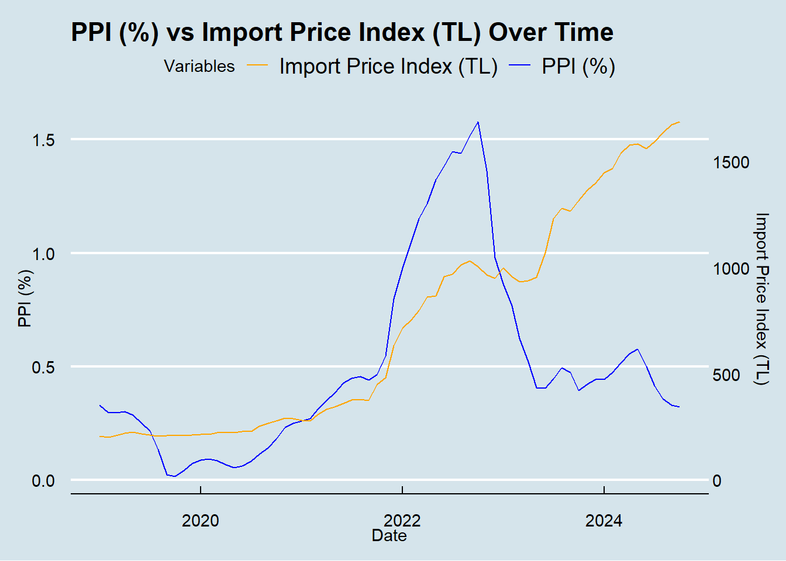
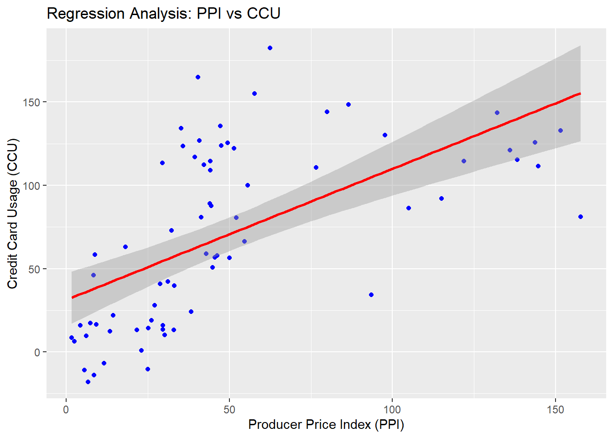
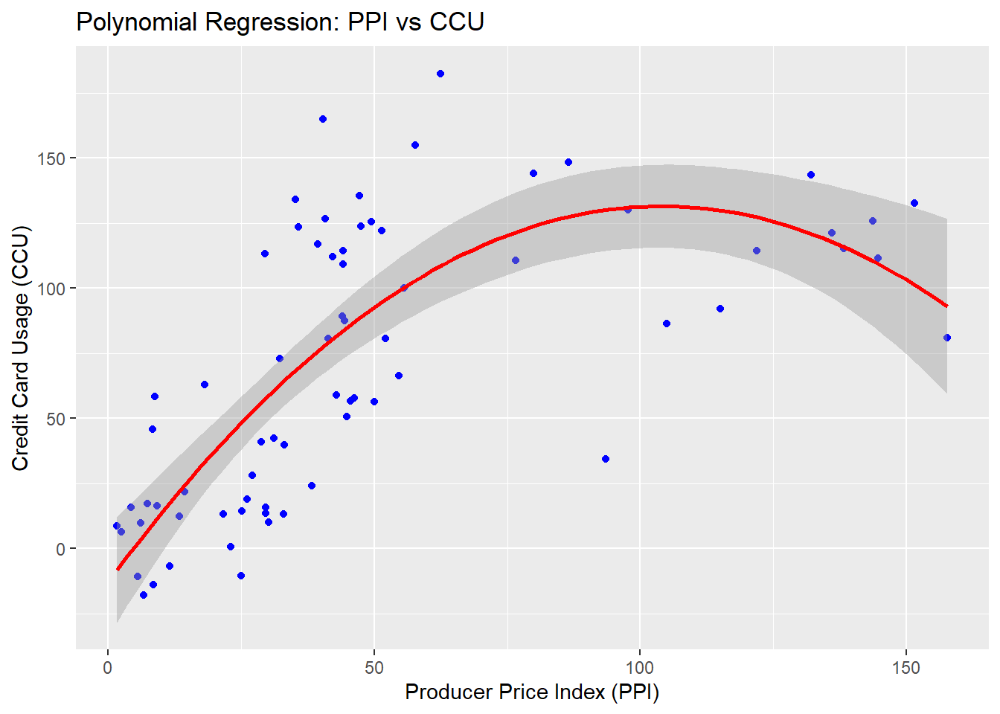
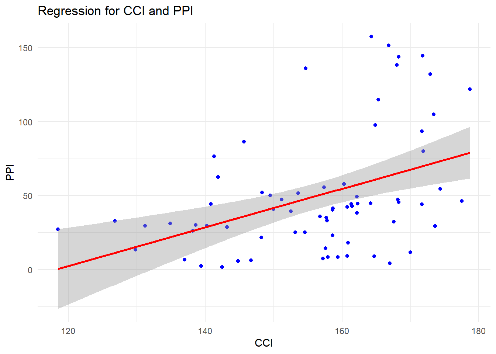

We calculated for correlation coefficients for all indicators and highest correlation coefficient is 0.88 between PPI and Housing Price Index.
We make a polynomial regression analysis for PPI and Credit Card Usage by taking a furter step analysis and it was a perfect fit for these two indicator.
We made a multiple regression analysis as our dependent variable PPI and our independent variables as Credit Card Usage,Housing Price Index and Consumer Confidence Index.And this model explains about 80.12% of the variability in PPI, which is strong.
1-Producer Price Index vs Consumer Price Index
In this study, the relationship between the Producer Price Index (PPI) and the Consumer Price Index (CPI) has been analyzed. While PPI measures changes in the prices of goods and services at the producer level, CPI reflects changes in the prices paid by consumers. The interaction between these indices is crucial for understanding price formation processes, as changes in production costs (PPI) can often translate into consumer prices (CPI). This analysis examines how changes in PPI affect CPI and evaluates the interaction between these two economic indicators. Using historical data and various statistical methods, the direction and magnitude of this relationship have been revealed.
Based on this analysis we will choose PPI or CPI as our baseline to compare it’s effects on other economic indicators.
First let’s look the table we will use for analysis.We used annual percentage changes of the variables as index values.
First let’s look the table we will use for analysis.We used annual percentage changes of the variables as index values.
As you can see in the graph above,it seems both indexes have a similar behaviour over time.By just looking at this graph,we may think there is a strong relation between them.They track each others movement on the graph.But just visuality may not be enough therefore we will do a correlation test.
This correlation value supports visual data and says there is really strong relation between them.Also, p-value(1.087791e-16) is very low.Usually,results are considered significant if they are less than 0.5.In this case, the probability of the course of the situation arising by chance is extremely low.But what happens if there is some lag between interaction.Let’s do some lagged correlation tests.
data_ppi_cpi<- table_ppi_cpi %>%mutate(PPI_lag1 =lag(PPI, 1),PPI_lag2 =lag(PPI, 2),PPI_lag3 =lag(PPI, 3),PPI_lag4 =lag(PPI, 4),PPI_lag5 =lag(PPI, 5))cor_lag1_ppi_cpi <-cor(data_ppi_cpi$PPI_lag1, data_ppi_cpi$CPI, use ="complete.obs")cor_lag2_ppi_cpi <-cor(data_ppi_cpi$PPI_lag2, data_ppi_cpi$CPI, use ="complete.obs")cor_lag3_ppi_cpi <-cor(data_ppi_cpi$PPI_lag3, data_ppi_cpi$CPI, use ="complete.obs")cor_lag4_ppi_cpi <-cor(data_ppi_cpi$PPI_lag4, data_ppi_cpi$CPI, use ="complete.obs")print(cor_lag1_ppi_cpi)
[1] 0.8098936
print(cor_lag2_ppi_cpi)
[1] 0.7947913
print(cor_lag3_ppi_cpi)
[1] 0.7669985
print(cor_lag4_ppi_cpi)
[1] 0.732202
Highest correlation is 0.809 with a 1 unit time lag.More than 1 unit time lag,correlation values is decreasing and they are less than original correlation value.There is not an obvious increase on values with lag.But still it’s proves there is a strong relation between two index.But which index affects the other?Which index should we use as a independent variable to analyse other economic indicators’s behaviours?We should Grenger casuality test to decide.
grangertest(PPI ~ CPI, order =2, data = table_ppi_cpi)
Granger causality test
Model 1: PPI ~ Lags(PPI, 1:2) + Lags(CPI, 1:2)
Model 2: PPI ~ Lags(PPI, 1:2)
Res.Df Df F Pr(>F)
1 64
2 66 -2 2.3675 0.1019
grangertest(CPI ~ PPI, order =2, data = table_ppi_cpi)
First Granger test examines if CPI affects PPI values and it has a p-value as 0.1019 which is too high.That means CPI values does not have a effect on PPI values. On the other hand,second Granger test examinse if PPI affects CPI values and it has a p-value as 6.712e-05 which is very low.Generally p-values less than 0.05 considered statistically meaningful.Thus,we can say PPI values does affect CPI values. Finally we can say PPI can be independent variable for our further analysis.That’s why we choose PPI as our inflation rate. Before continue on further analysis we will do a regression analysis between PPI and CPI to better understanding of their relation.
reg_model <-lm(CPI ~ PPI, data = data_ppi_cpi)summary(reg_model)
Call:
lm(formula = CPI ~ PPI, data = data_ppi_cpi)
Residuals:
Min 1Q Median 3Q Max
-19.811 -10.354 -6.141 5.421 32.803
Coefficients:
Estimate Std. Error t value Pr(>|t|)
(Intercept) 13.99397 2.91415 4.802 8.8e-06 ***
PPI 0.49669 0.04548 10.921 < 2e-16 ***
---
Signif. codes: 0 '***' 0.001 '**' 0.01 '*' 0.05 '.' 0.1 ' ' 1
Residual standard error: 15.49 on 69 degrees of freedom
Multiple R-squared: 0.6335, Adjusted R-squared: 0.6282
F-statistic: 119.3 on 1 and 69 DF, p-value: < 2.2e-16
Let’s analyse this result.
Intercept:13.99
This represents the predicted value of CPI when PPI (index) is zero.Practically, it indicates the starting point.
PPI Coefficient (index):0.49669
This coefficient shows that a one-unit increase in PPI leads to an average increase of 0.497 units in CPI. The positive sign indicates that an increase in PPI results in an increase in CPI.
P-values (for coefficients):
Intercept:p=8.8𝑒-0.6 PPI coefficient=p<2𝑒-16
Since the p-values for both coefficients are less than 0.05, they are statistically significant. This supports the conclusion that the independent variable (PPI) has a significant effect on the dependent variable (CPI).
Multiple R-squared:0.6335
This value indicates that the model explains 63.35% of the total variation in the CPI variable. This suggests a strong relationship, although 36.65% of the variation remains unexplained. The model has reasonable explanatory power.
F-Statistic:119.3, p< 2.2𝑒- 16
This test evaluates the overall significance of the model. It shows that PPI is a significant variable for predicting CPI. The very small p-value (< 0.05) confirms that the model as a whole is statistically significant.
Regression equation:
CPI = 13.99 + 0.49669.PPI
And there is graph with regression line.
data_ppi_cpi$Tarih <-as.Date(paste0("01-", data_ppi_cpi$Tarih), format ="%d-%m-%Y")reg_graph<-ggplot(data_ppi_cpi, aes(x = PPI, y = CPI)) +geom_point(color ="blue") +geom_smooth(method ="lm", color ="red", se =TRUE) labs(title ="Regression Analysis: PPI vs CPI",x ="Producer Price Index (PPI)",y ="Consumer Price Index (CPI)")
$x
[1] "Producer Price Index (PPI)"
$y
[1] "Consumer Price Index (CPI)"
$title
[1] "Regression Analysis: PPI vs CPI"
attr(,"class")
[1] "labels"
reg_graph
`geom_smooth()` using formula = 'y ~ x'
2-Producer Price Index vs Credit Card Usage
In this study, the relationship between the Producer Price Index (PPI) and credit card usage has been analyzed. PPI measures changes in the prices of goods and services at the producer level, while credit card usage is an important indicator reflecting consumer spending habits and economic activity. The interaction between these two variables is critical for understanding the impact of economic fluctuations and price changes on consumer behavior. Using historical data, the study examines how changes in PPI affect credit card usage and evaluates the direction and magnitude of this relationship through various statistical methods.
Data we will use is again annual percentage changes for both variables and it accounts last 6 years since 2019.
We can make a legitimate guess about their relation with this visualized data.But we need analytical results to interpret the results.Therefore, we will do a correlation test between them.
Correlation value for PPI and CCU is 0.603 which is pretty high.This means there is a relaively strong relation between them.Also p-value is less than 0.05 which means it is statistically meaningful.We also will do a correlation test with time lag to go deeper.
data_ppi_ccu <- table_ppi_ccu %>%mutate(PPI_lag1 =lag(PPI, 1),PPI_lag2 =lag(PPI, 2),PPI_lag3 =lag(PPI, 3),PPI_lag4=lag(PPI,4),PPI_lag5=lag(PPI,5))cor_lag1_ppi_ccu <-cor(data_ppi_ccu$PPI_lag1, data_ppi_ccu$usage, use ="complete.obs")cor_lag2_ppi_ccu <-cor(data_ppi_ccu$PPI_lag2, data_ppi_ccu$usage, use ="complete.obs")cor_lag3_ppi_ccu <-cor(data_ppi_ccu$PPI_lag3, data_ppi_ccu$usage, use ="complete.obs")cor_lag4_ppi_ccu <-cor(data_ppi_ccu$PPI_lag4, data_ppi_ccu$usage, use ="complete.obs")cor_lag5_ppi_ccu <-cor(data_ppi_ccu$PPI_lag5, data_ppi_ccu$usage, use ="complete.obs")print(cor_lag1_ppi_ccu)
[1] 0.6165495
print(cor_lag2_ppi_ccu)
[1] 0.6422825
print(cor_lag3_ppi_ccu)
[1] 0.6536861
print(cor_lag4_ppi_ccu)
[1] 0.6713074
print(cor_lag5_ppi_ccu)
[1] 0.6726063
As the lag time increases, the correlation value increases. After the 4th and 5th delay, the rate of increase slows down.So we can say PPI values causes CCU Therefore, we can say that PPI has a delayed effect on credit card usage which is higher than correlation value without time lag.
3-PRODUCER PRICE INDEX VS INTEREST RATE
In this study, the relationship between the Producer Price Index (PPI) and interest rates has been analyzed. While PPI measures changes in the prices of goods and services at the producer level, interest rates are a critical macroeconomic indicator influencing economic growth, consumption, and investment decisions. The interaction between these two variables is significant for understanding inflation dynamics and supporting economic policy decisions. Using historical data, the study evaluates the impact of changes in PPI on interest rates and examines the direction and magnitude of this relationship through various statistical methods.First let’s take a look at our data table:
Correlation value is 0.119 which means these two indicators does not have a strong relation.Also p-value is more than 0.05 and this indicates this correlation value is NOT significantly meaningfull.To conclude,we can say we did not find a clue about relation between PPI and Interest Rate indicators.
4-PRODUCER PRICE INDEX VS CONSUMER CONFIDENCE INDEX
This study analyzes the relationship between the Producer Price Index (PPI) and the Consumer Confidence Index (CCI). While PPI measures changes in the prices of goods and services at the producer level, the Consumer Confidence Index reflects the sentiment and expectations of consumers regarding the economy. Understanding the interaction between these two indicators is crucial for assessing the impact of price changes on consumer perceptions and behavior. Using historical data, the study examines how changes in PPI influence consumer confidence and evaluates the direction and magnitude of this relationship through various statistical methods.
0.422 is relatively low to say these indicators has a notable relation but p-value is low enough to be statisticaly meaningful.So we can easily say we can confirm that there is a relation bewteen PPI and CCI and this relation is not strong.
5-PRODUCER PRICE INDEX VS HOUSUNG PRICE INDEX
This study examines the relationship between the Producer Price Index (PPI) and the Housing Price Index (HPI). While PPI tracks changes in the prices of goods and services at the producer level, HPI reflects fluctuations in residential property prices. Understanding the interaction between these two indices is essential for analyzing how changes in production costs influence the housing market. Using historical data, the study investigates the impact of PPI on housing prices and evaluates the direction and strength of this relationship through various statistical methods.
We can see in the graph that this tho index values are almost stick to each other.Now let’s do a correlation test and see if we can verify that.
correlation_house <-cor(ppi_housing$PPI, ppi_housing$Housing_Percentage_Change, use ="complete.obs")print(paste("Korelasyon Katsayısı: ", correlation_house))
[1] "Korelasyon Katsayısı: 0.888596687452896"
According to this correlation value,these two indicators has a ver powerful relation which verify our visual observatoin.And p-value is too low which means this relation is statistically meaningful.
6-PRODUCER PRICE INDEX and ENERGY PRICE INDEX
This study explores the relationship between the Producer Price Index (PPI) and Brent Oil prices. PPI measures changes in the prices of goods and services at the producer level, while Brent Crude Oil serves as a benchmark for global oil prices, influencing production costs across various industries. The interaction between these two indicators is critical for understanding the impact of energy price fluctuations on broader economic price dynamics. Using historical data, the study investigates how changes in Brent Crude Oil prices affect PPI and evaluates the direction and magnitude of this relationship through various statistical methods.
Correlation valu for PPI and Brent Oil prices is 0.603 which is moderatly high.P-value is 0.03 means this correlation test is statistically meaningful.We can say that there is a relation between these two economic indicators.
graph_import <- dataefe |>ggplot(aes(x = Date)) +geom_line(aes(y =`PPI (%)`, color ="PPI (%)")) +geom_line(aes(y =`Import Unit Value Index (TL)`* scale_import, color ="Import Price Index (TL)")) +scale_y_continuous(name ="PPI (%)",sec.axis =sec_axis(~ . / scale_import, name ="Import Price Index (TL)") ) +scale_color_manual(values =c("PPI (%)"="blue", "Import Price Index (TL)"="orange")) +labs(title ="PPI (%) vs Import Price Index (TL) Over Time",x ="Date",y ="PPI (%)",color ="Variables") +theme_minimal() +theme_economist()graph_import

library(dplyr)cor_ppi_usd <- dataefe %>%summarize(correlation =cor(`PPI (%)`, USD, use ="complete.obs", method ="pearson"))cor_ppi_import <- dataefe %>%summarize(correlation =cor(`PPI (%)`, `Import Unit Value Index (TL)`, use ="complete.obs", method ="pearson"))
cor_ppi_usd$correlation
[1] 0.3080418
cor_ppi_import$correlation
[1] 0.4149023
INDICATORS WHICH HAS MOST STRONG RELATİON WITH PPI
Correlation Coefficient:
• Exchange Rates- Producer Price Index (PPI)= 0.30804
• Energy Price Index- Producer Price Index (PPI)= 0.25689
• Housing Price Index- Producer Price Index (PPI)= 0.88859
• Import Price Index- Producer Price Index (PPI)= 0.41490
• Interest Rates- Producer Price Index (PPI)= 0.11986
• Consumer Confidence Index- Producer Price Index (PPI)= 0.42212
• Consumer Price Index- Producer Price Index (PPI)= 0.7959363
• Credit Card Usage- Producer Price Index (PPI)= 0.60305
We can choose the four most important and influential variables from the dataset we are using, then run a regression analysis to see which factors have the biggest effects on the PPI. We may learn more about the characteristics of the models we should concentrate on and how to enhance them to increase their efficacy or predictive power after performing this regression study. Our best 4 atrribute:
Consumer Price Index- Producer Price Index (PPI)= 0.7959363
Housing Price Index- Producer Price Index (PPI)= 0.888596687452896
Consumer Confidence Index- Producer Price Index (PPI)= 0.42212
Credit Card Usage- Producer Price Index (PPI)= 0.60305
PIE CHART FOR CORRELATION VALUES BETWEEN PPI AND FOUR INDICATORS
On our previous analysis we have seen that credit card usage and PPI has a relatively strong relation.An increasing on PPI cause an increase on CCU usually.We will take a further step and make a regression analysis for them.Our purpose is have a better understanding about this two indicators relation.
regmodel_ppiccu <-lm(usage ~ PPI, data = table1)summary(regmodel_ppiccu)
Call:
lm(formula = usage ~ PPI, data = table1)
Residuals:
Min 1Q Median 3Q Max
-74.31 -29.70 -13.62 24.07 102.06
Coefficients:
Estimate Std. Error t value Pr(>|t|)
(Intercept) 31.3077 8.0262 3.901 0.00022 ***
PPI 0.7866 0.1253 6.280 2.62e-08 ***
---
Signif. codes: 0 '***' 0.001 '**' 0.01 '*' 0.05 '.' 0.1 ' ' 1
Residual standard error: 42.66 on 69 degrees of freedom
Multiple R-squared: 0.3637, Adjusted R-squared: 0.3544
F-statistic: 39.43 on 1 and 69 DF, p-value: 2.615e-08
The regression analysis output provides insights into the relationship between CCU (dependent variable) and PPI (independent variable). Here’s the detailed interpretation:
1. Regression Equation
From the coefficients:
Intercept: 31.3077
PPI Coefficient: 0.78660
The regression equation is:
CCU=31.31+0.7866⋅PPI
This indicates:
For every 1-unit increase in PPI, the predicted CCU increases by approximately 0.787 units.
When PPI is zero, the predicted usage is approximately 31.31.
2. Significance of Coefficients
The p-value for the intercept is 0.00022, and for the PPI coefficient, it is 2.62e-08. Both are much smaller than 0.05, indicating that the coefficients are statistically significant.
This means that PPI has a meaningful effect on CCU
3. Model Fit
Multiple R-squared: 0.3637
This value suggests that the model explains 36.37% of the variation in usage.
While this indicates a moderate relationship, a significant portion of variation in CCU (%63.63) remains unexplained by PPI alone.
Adjusted R-squared: 0.35440
This accounts for the number of predictors in the model and indicates a similar level of explanatory power.
4. Overall Model Significance
F-statistic: 39.43 with a p-value of 2.615e-08
This shows that the model as a whole is statistically significant, meaning that PPI is a significant predictor of CCU.
5. Residual Analysis
The residuals range from -74.31 to 102.6, with a residual standard error of 42.66.
This indicates the variability of the predicted values around the observed values.
Conclusion:
The regression analysis suggests a moderate and statistically significant relationship between PPI and CCU. While the model demonstrates that PPI has a meaningful impact on usage, additional predictors or variables may be needed to better explain the variability in usage.
ggplot(table1, aes(x = PPI, y = usage)) +geom_point(color ="blue") +geom_smooth(method ="lm", color ="red", se =TRUE) +labs(title ="Regression Analysis: PPI vs CCU",x ="Producer Price Index (PPI)",y ="Credit Card Usage (CCU)")
`geom_smooth()` using formula = 'y ~ x'

Linear regression analysis indicates that these two indicators has a relation but we also try polynomial regression analysis.
modelpoly_ccu <-lm(usage ~poly(PPI, 2), data = table1)summary(modelpoly_ccu)
Call:
lm(formula = usage ~ poly(PPI, 2), data = table1)
Residuals:
Min 1Q Median 3Q Max
-95.850 -26.289 -0.347 26.291 87.385
Coefficients:
Estimate Std. Error t value Pr(>|t|)
(Intercept) 70.416 4.283 16.441 < 2e-16 ***
poly(PPI, 2)1 267.905 36.090 7.423 2.44e-10 ***
poly(PPI, 2)2 -192.397 36.090 -5.331 1.20e-06 ***
---
Signif. codes: 0 '***' 0.001 '**' 0.01 '*' 0.05 '.' 0.1 ' ' 1
Residual standard error: 36.09 on 68 degrees of freedom
Multiple R-squared: 0.5512, Adjusted R-squared: 0.538
F-statistic: 41.76 on 2 and 68 DF, p-value: 1.475e-12
1. Regression Equation
The model includes a quadratic term:
CCU=70.416 + ( 267.905 x poly(PPI,2) + ( -192.397 x poly(PPI,2) 2 )
2.Significance of Coefficients
Intercept (70.416): Highly significant (p < 2e -1 6)
First-degree term (267.905): Highly significant (p = 2.44e-10)
Second-degree term (-192.397): Highly significant (p = 1.20e - 06)
Both polynomial terms are statistically significant, confirming the nonlinear relationship between CCU and PPI.
3. Model Fit
Multiple R-squared: 0.5512
The model explains 55.12% of the variation in CCU, which is a substantial improvement over the linear model (%36.37)
Adjusted R-squared: 0.538
Accounts for the number of predictors and suggests good explanatory power.
4. Overall Model Significance
F-statistic: 41.76 , p = 1.475e-12
The model is highly statistically significant overall.
5. Residual Analysis
Residual standard error: 36.09
Indicates variability in predicted values around the observed data.
Conclusion:
The polynomial regression model provides a better fit compared to the linear model, explaining more variance in CCU. The significant quadratic term confirms that the relationship between CCU and PPI is nonlinear. This model captures the complexity of the relationship more effectively.
ggplot(table1, aes(x = PPI, y = usage)) +geom_point(color ="blue") +geom_smooth(method ="lm", formula = y ~poly(x, 2), color ="red", se =TRUE)+labs(title ="Polynomial Regression: PPI vs CCU",x ="Producer Price Index (PPI)",y ="Credit Card Usage (CCU)")

PPI and HOUSING PRICE INDEX
Our highest correlation value was 0.88 and it was between PPI and Housing Price Index.So we assume we can find a stronger relation and better understanding with regresssion analysis.
model_housing <-lm(Housing_Percentage_Change ~ PPI, data = ppi_housing)summary(model_housing)
Call:
lm(formula = Housing_Percentage_Change ~ PPI, data = ppi_housing)
Residuals:
Min 1Q Median 3Q Max
-38.310 -20.341 -0.811 12.877 56.734
Coefficients:
Estimate Std. Error t value Pr(>|t|)
(Intercept) 2.44605 5.11180 0.479 0.634
PPI 1.19120 0.07747 15.376 <2e-16 ***
---
Signif. codes: 0 '***' 0.001 '**' 0.01 '*' 0.05 '.' 0.1 ' ' 1
Residual standard error: 26.23 on 63 degrees of freedom
Multiple R-squared: 0.7896, Adjusted R-squared: 0.7863
F-statistic: 236.4 on 1 and 63 DF, p-value: < 2.2e-16
1. Regression Equation
The estimated regression equation is:
PPI = 9.086 + (0.6629 X Housing Percentage Change)
Intercept (9.086):
Represents the predicted PPI when Housing Percentage Change is zero.
Statistically significant (( p=0.0153 < 0.05).
Housing Percentage Change Coefficient (0.6629):
Indicates that for every 1% increase in housing percentage change, PPI is expected to increase by 0.6629 units on average.
Highly significant (p < 2e - 16)
2. Model Fit
Multiple R-squared: 0.7896
The model explains 78.96% of the variation in PPI, indicating a very strong relationship.
Adjusted R-squared: 0.7863
Adjusted for the number of predictors; it also confirms a strong explanatory power.
3. Model Significance
F-statistic: 236.4, p< 2.2e - 16
The overall model is highly statistically significant, confirming that Housing Percentage Change is a meaningful predictor of PPI.
4. Residual Analysis
Residual Standard Error: 19.57
Indicates the typical deviation of observed PPI values from the predicted values.
Residuals are reasonably small, suggesting good model performance.
Conclusion:
The regression results show a strong, positive, and statistically significant relationship between Housing Percentage Change and PPI. The model explains nearly 79% of the variation in PPI, making it a robust predictor.
ggplot(ppi_housing, aes(x = Housing_Percentage_Change, y = PPI)) +geom_point(color ="blue") +geom_smooth(method ="lm", color ="red") +labs(title ="Regression for Housing PI and PPI",x ="Housing Price (Housing_Percentage_Change)",y ="PPI (PPI)") +theme_minimal()
`geom_smooth()` using formula = 'y ~ x'
PPI and Consumer Confidence Index
Our previous analysis show that these two indicators has a coefficient value as 0.42.Although,this is a low value,it’s still our 4th highest correlation value.So,we will me a regression analysis:
model_confidence <-lm(CCI ~ PPI, data = data_yusuf1)summary(model_confidence)
Call:
lm(formula = CCI ~ PPI, data = data_yusuf1)
Residuals:
Min 1Q Median 3Q Max
-34.645 -6.981 2.473 8.071 21.732
Coefficients:
Estimate Std. Error t value Pr(>|t|)
(Intercept) 149.44632 2.26154 66.082 < 2e-16 ***
PPI 0.13652 0.03529 3.868 0.000246 ***
---
Signif. codes: 0 '***' 0.001 '**' 0.01 '*' 0.05 '.' 0.1 ' ' 1
Residual standard error: 12.02 on 69 degrees of freedom
Multiple R-squared: 0.1782, Adjusted R-squared: 0.1663
F-statistic: 14.96 on 1 and 69 DF, p-value: 0.0002457
1. Regression Equation
The regression equation is:
CCI= 149.446+ (0.137 X PPI )
Intercept (149.446):
Represents the predicted CCI when PPI is zero.
Highly statistically significant (P < 2E -16, indicating it holds meaningful information in this context.
PPI Coefficient (0.137):
Indicates that for every 1-unit increase in PPI, the CCI increases by 0.137 units on average.
Statistically significant (P = 0.000246<0.05), showing that PPI has a meaningful impact on CCI.
2. Model Fit
Multiple R-squared: 0.1782
The model explains 17.82% of the variation in CCI, which is relatively low. This suggests other factors not included in the model likely influence CCI.
Adjusted R-squared: 0.1663
Adjusted for the number of predictors, it confirms the limited explanatory power of the model.
3. Model Significance
F-statistic: 14.96,P = 0.0002457
The model is statistically significant overall, indicating that PPI is a meaningful predictor of CCI.
4. Residual Analysis
Residual Standard Error: 12.02
Represents the typical deviation of the observed CCI values from the predicted values.
Residuals show some spread, indicating potential unexplained variability in the model.
Conclusion:
While the regression identifies a statistically significant positive relationship between PPI and CCI, the low R2 value suggests that PPI alone is not a strong predictor of CCI. Other variables likely influence CCI, and incorporating them could improve the model’s explanatory power.
ggplot(data_yusuf1, aes(x = CCI, y = PPI)) +geom_point(color ="blue") +geom_smooth(method ="lm", color ="red") +labs(title ="Regression for CCI and PPI",x ="CCI",y ="PPI") +theme_minimal()
`geom_smooth()` using formula = 'y ~ x'

MULTIPLE REGRESSION ANALYSIS
We will implement a multıple regression analysis as our dependent variable is PPI and our independent variables is CCI,CCU and Housing PI.
multi_reg_model <-lm(PPI ~ CCI + House + CCU, data = ppi00)summary(multi_reg_model)
Call:
lm(formula = PPI ~ CCI + House + CCU, data = ppi00)
Residuals:
Min 1Q Median 3Q Max
-33.286 -16.721 3.037 14.951 32.000
Coefficients:
Estimate Std. Error t value Pr(>|t|)
(Intercept) -60.59278 28.57316 -2.121 0.0380 *
CCI 0.47421 0.18971 2.500 0.0151 *
House 0.66670 0.06205 10.745 1.06e-15 ***
CCU -0.06419 0.06391 -1.004 0.3192
---
Signif. codes: 0 '***' 0.001 '**' 0.01 '*' 0.05 '.' 0.1 ' ' 1
Residual standard error: 18.87 on 61 degrees of freedom
Multiple R-squared: 0.8105, Adjusted R-squared: 0.8012
F-statistic: 86.97 on 3 and 61 DF, p-value: < 2.2e-16
1. Model Overview
The regression model predicts PPI (dependent variable) using CCI, House PI, and CCU (independent variables).
The overall model is statistically significant with a p-value < 2.2e-16, indicating that at least one of the predictors significantly contributes to explaining the variability in PPI.
2. Residuals
The residuals represent the differences between the observed and predicted values of PPI. They range from -33.286 to 32.000, with the median close to zero (3.037), indicating that the model predictions are reasonably centered around the actual values.
3. Coefficients
Predictor
Estimate
Std. Error
t-value
p-value
Significance
Intercept
-60.59278
28.57316
-2.121
0.0380
*
CCI
0.47421
0.18971
2.500
0.0151
*
House
0.66670
0.06205
10.745
1.06e-15
***
CCU
-0.06419
0.06391
-1.004
0.3192
Intercept (-60.593): When all predictors (CCI, House, and CCU) are zero, the expected value of PPI is -60.593. This may not have practical significance but serves as the model’s baseline.
CCI (0.474): A one-unit increase in CCI is associated with an average increase of 0.474 units in PPI, holding other variables constant. This effect is statistically significant (p = 0.0151).
House (0.667): A one-unit increase in House is associated with an average increase of 0.667 units in PPI, holding other variables constant. This predictor is highly significant (p = 1.06e-15).
CCU (-0.064): A one-unit increase in CCU is associated with an average decrease of 0.064 units in PPI, but this effect is not statistically significant (p = 0.3192).
4. Model Performance
Residual Standard Error: 18.87, indicating the typical deviation of observed PPI values from the predicted values.
Multiple R-squared (0.8105): The model explains approximately 81.05% of the variability in PPI.
Adjusted R-squared (0.8012): After adjusting for the number of predictors, the model still explains about 80.12% of the variability in PPI, which is strong.
5. Summary
The model is effective in explaining variations in PPI, particularly due to the significant contributions of CCI and House.
The predictor CCU does not significantly contribute to the model, and removing it might improve simplicity without sacrificing much explanatory power.
The high R2 value and adjusted R2 indicate a strong fit, but there may still be room for improvement by exploring additional predictors or refining the existing ones.